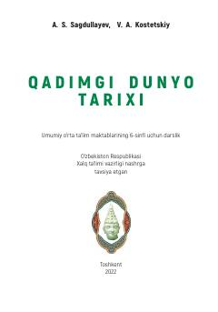

QD6-sinf o‘quvchilari uchun qadimgi dunyo tarixi bo‘yicha rasmiy darslik.
Ushbu darslik umumiy o‘rta ta’lim maktablarining 6-sinf o‘quvchilari uchun mo‘ljallangan bo‘lib, eng qadimgi tuzumdan tortib to Qadimgi Rim imperiyasining tanazzuligacha bo‘lgan insoniyat tarixini yoritadi. Kitobda ibtidoiy jamiyat, Qadimgi Sharq, O‘rta Osiyo, Yunoniston va Rim sivilizatsiyalarining shakllanishi, madaniyati hamda muhim tarixiy voqealari bayon etilgan.